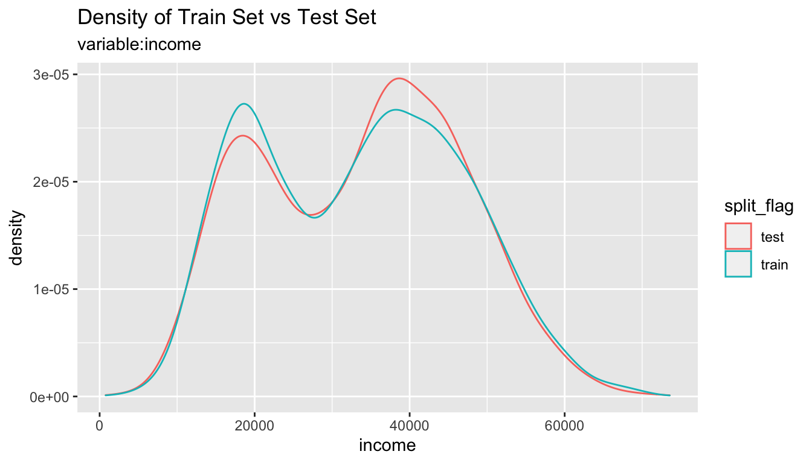
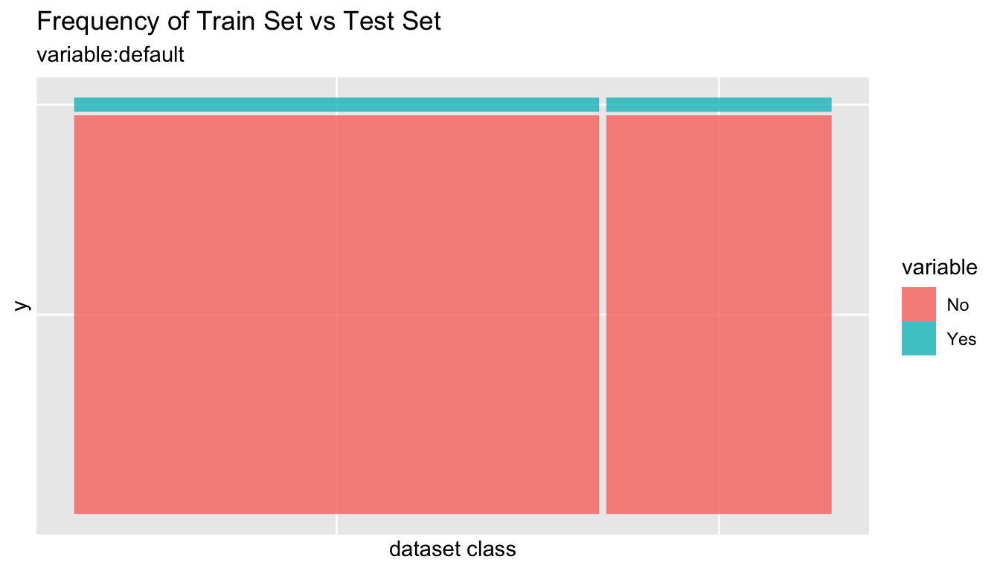
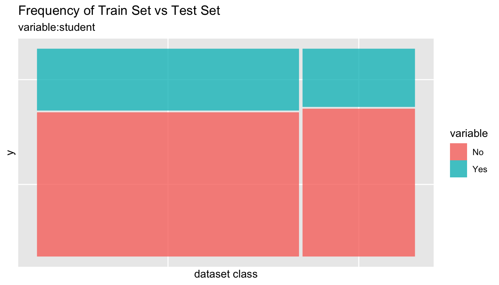
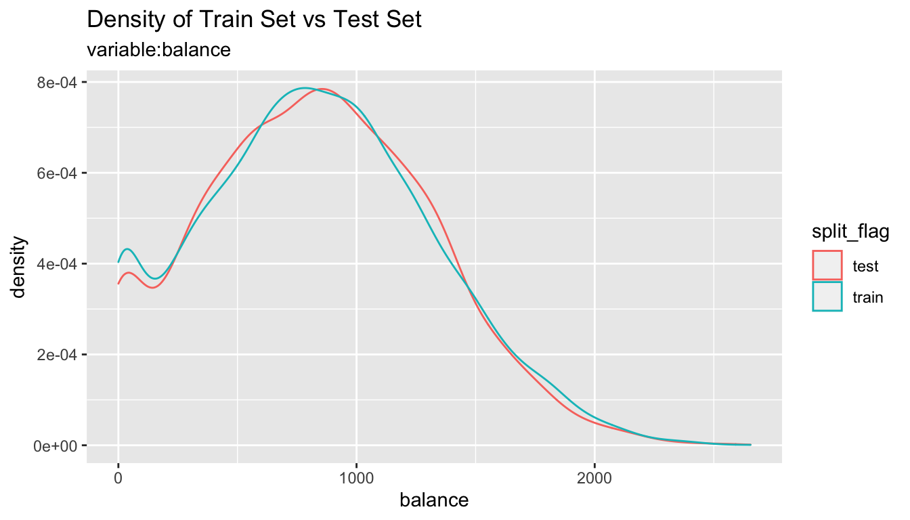
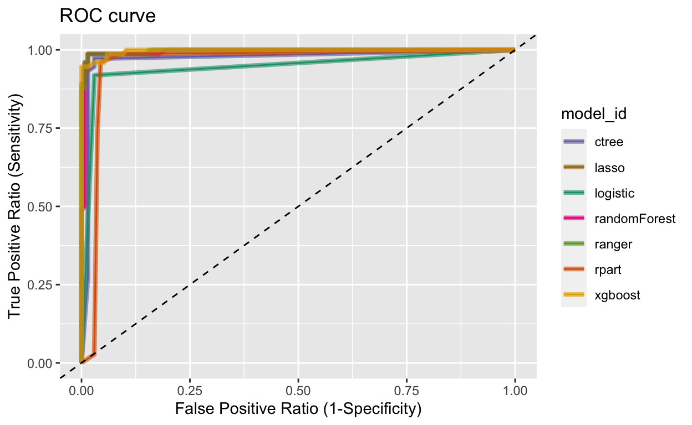

개요
alookr은 이진분류 모델의 개발 과정에서 데이터 정제, 데이터의 traning set과 test set으로의 분리, 모델 적합, 적합된 모델의 평가 및 최적의 모델을 선정한다. 이 패키지는 dplyr 패키지와 협업하여 이진분류 데이터 분석 프로세스를 유연하게 처리해 준다.
주요 기능:
- 데이터를 traning set과 test set으로 나눈다.
- 여러 대표적인 이진분류 모델을 적합한다.
- 적합한 이진분류 모델을 평가하고 최적의 모델을 선정한다.
- 이진분류 모델의 전 프로세스를 지원한다.
alookr이라는 이름은 데이터 분석 과정에서 looking at the analytics process에서 유래하여 작명하였다.
alookr 설치
CRAN에 등록된, 릴리즈된 패키지는 다음과 같이 설치한다.:
install.packages("alookr")
혹은 GitHub에 등록된 vignettes이 없는 개발버전은 다음처럼 설치한다.:
devtools::install_github("choonghyunryu/alookr")
혹은 GitHub에 등록된 vignettes을 포함한 개발버전은 다음처럼 설치한다.:
install.packages(c("ISLR"))
devtools::install_github("choonghyunryu/alookr", build_vignettes = TRUE)
사용 방법
alookr에는 몇 가지 vignette 파일을 포함하고 있는데, 이 포스트는 이를 기초로 작성하였다.
제공되는 vignette는 다음과 같다.
- Cleansing the dataset
- Splitting the dataset
- Split the data into a training set and a test set
- Classification Modeling
- Modeling and Evaluate, Predict
browseVignettes(package = "alookr")
데이터 정제
예제 데이터 생성하기
alookr 패키지의 기초적인 사용 방법을 설명하기 위해서 data_exam라는 가상의 데이터를 생성한다. 이 데이터는 5개의 변수를 포함한다.
예제를 위한 데이터는 다음과 같은 변수를 포함한다.:
- id : character
- year: character
- count: numeric
- alpha : character
- flag : character
# 샘플 데이터 생성
set.seed(123L)
id <- sapply(1:1000, function(x)
paste(c(sample(letters, 5), x), collapse = ""))
year <- "2018"
set.seed(123L)
count <- sample(1:10, size = 1000, replace = TRUE)
set.seed(123L)
alpha <- sample(letters, size = 1000, replace = TRUE)
set.seed(123L)
flag <- sample(c("Y", "N"), size = 1000, prob = c(0.1, 0.9), replace = TRUE)
data_exam <- data.frame(id, year, count, alpha, flag, stringsAsFactors = FALSE)
# 데이터의 구조
str(data_exam)
'data.frame': 1000 obs. of 5 variables:
$ id : chr "osncj1" "rvket2" "nvesi3" "chgji4" ...
$ year : chr "2018" "2018" "2018" "2018" ...
$ count: int 3 3 10 2 6 5 4 6 9 10 ...
$ alpha: chr "o" "s" "n" "c" ...
$ flag : chr "N" "N" "N" "N" ...# 데이터의 집계
summary(data_exam)
id year count
Length:1000 Length:1000 Min. : 1.000
Class :character Class :character 1st Qu.: 3.000
Mode :character Mode :character Median : 6.000
Mean : 5.698
3rd Qu.: 8.000
Max. :10.000
alpha flag
Length:1000 Length:1000
Class :character Class :character
Mode :character Mode :character
데이터 정제
cleanse()는 이진분류 모델 적합을 수행하기 전에 데이터 정제를 수행한다.
cleanse()의 기능은 다음과 같다.:
- 모든 관측치가 동일한 값을 갖는 변수의 제거
- 유일한 값의 비중이 높은 변수의 제거
- character 변수를 factor로 변경
- 결측치의 비중이 높은 변수의 제거
cleanse()을 이용한 데이터의 정제
다음 예제는 data_exam 데이터 프레임을 정제한다.:
── Checking unique value ─────────────────────────── unique value is one ──
• year
── Checking unique rate ─────────────────────────────── high unique rate ──
• id = 1000(1)
── Checking character variables ─────────────────────── categorical data ──
• alpha
• flag# 정제된 데이터의 구조
str(newDat)
'data.frame': 1000 obs. of 3 variables:
$ count: int 3 3 10 2 6 5 4 6 9 10 ...
$ alpha: Factor w/ 26 levels "a","b","c","d",..: 15 19 14 3 10 18 22 11 5 20 ...
$ flag : Factor w/ 2 levels "N","Y": 1 1 1 1 2 1 1 1 1 1 ...remove variables whose unique value is one: year 변수는 오직 “2018”라는 하나의 값만 가지고 있다.. 이런 변수는 모형적합에 필요치 않다. 그래서 제거된다.remove variables with high unique rate: 범주형 변수에서 수준(levle)의 개수가 너무 많으면, 분류모델의 변수로 적당하지 않다. 이 경우에는 식별자(identifier)일 가능성이 높다. 그래서 범주형이나 문자열 변수에서 유일값의 비율로 정의된, 수준의 개수/관측치의 개수가 큰 변수를 제거한다.- 레벨의 개수가 1000인 변수 id의 유일값의 비율은 1이다. 그래서 이 변수는 제거 대상이다.
- 변수 alpha의 유일값의 비율은 0.026이며, 이 변수로 제거된다.
converts character variables to factor: character 변수인 변수 flag는 factor로 변경된다.
다음 예제처럼 유일값의 비율의 임계치를 변경하여, 범주형 변수의 제거를 조정할 수 있다.:
# 데이터 정제
newDat <- cleanse(data_exam, uniq_thres = 0.03)
── Checking unique value ─────────────────────────── unique value is one ──
• year
── Checking unique rate ─────────────────────────────── high unique rate ──
• id = 1000(1)
── Checking character variables ─────────────────────── categorical data ──
• alpha
• flag# 정제된 데이터의 구조
str(newDat)
'data.frame': 1000 obs. of 3 variables:
$ count: int 3 3 10 2 6 5 4 6 9 10 ...
$ alpha: Factor w/ 26 levels "a","b","c","d",..: 15 19 14 3 10 18 22 11 5 20 ...
$ flag : Factor w/ 2 levels "N","Y": 1 1 1 1 2 1 1 1 1 1 ...변수 alpha가 제거되지 않았다.
데이터 정제에 유일값의 비율을 적용하지 않으려면, 다음처럼 uniq 인수값을 FALSE로 지정하면 된다.:
# 데이터 정제
newDat <- cleanse(data_exam, uniq = FALSE)
── Checking character variables ─────────────────────── categorical data ──
• id
• year
• alpha
• flag# 정제된 데이터의 구조
str(newDat)
'data.frame': 1000 obs. of 5 variables:
$ id : Factor w/ 1000 levels "ablnc282","abqym54",..: 594 715 558 94 727 270 499 882 930 515 ...
$ year : Factor w/ 1 level "2018": 1 1 1 1 1 1 1 1 1 1 ...
$ count: int 3 3 10 2 6 5 4 6 9 10 ...
$ alpha: Factor w/ 26 levels "a","b","c","d",..: 15 19 14 3 10 18 22 11 5 20 ...
$ flag : Factor w/ 2 levels "N","Y": 1 1 1 1 2 1 1 1 1 1 ...character 변수를 factor로 변경하지 않으려면, 다음처럼 char 인수값을 FALSE로 지정한다.:
# 데이터 정제
newDat <- cleanse(data_exam, char = FALSE)
── Checking unique value ─────────────────────────── unique value is one ──
• year
── Checking unique rate ─────────────────────────────── high unique rate ──
• id = 1000(1)# 정제된 데이터의 구조
str(newDat)
'data.frame': 1000 obs. of 3 variables:
$ count: int 3 3 10 2 6 5 4 6 9 10 ...
$ alpha: chr "o" "s" "n" "c" ...
$ flag : chr "N" "N" "N" "N" ...결측치가 포함된 변수를 제거하려면, missing 인수값을 FALSE로 지정한다. 다음 예제는 결측치가 포함된 flag 변수를 제거한다.
data_exam$flag[1] <- NA
# 데이터 정제
newDat <- cleanse(data_exam, missing = TRUE)
── Checking missing value ────────────────────────────────── included NA ──
• flag
── Checking unique value ─────────────────────────── unique value is one ──
• year
── Checking unique rate ─────────────────────────────── high unique rate ──
• id = 1000(1)
── Checking character variables ─────────────────────── categorical data ──
• alpha# 정제된 데이터의 구조
str(newDat)
'data.frame': 1000 obs. of 2 variables:
$ count: int 3 3 10 2 6 5 4 6 9 10 ...
$ alpha: Factor w/ 26 levels "a","b","c","d",..: 15 19 14 3 10 18 22 11 5 20 ...상관관계가 높은 변수의 진단 및 제거
선형모형(linear model)에서 독립변수간에 강한 상관관계(correlation)가 있으면, 다중공선성(multicollinearity)이 발생한다. 따라서 상관관계가 존재하는 변수쌍에서 하나의 변수를 제거하는 것이 좋다.
선형모형이 아니더라도 상관관계가 큰 변수쌍에서 하나의 변수를 제거하면, 모델 적합과정에서 연산 오버헤드를 줄일 수도 있다. 그리고 모델을 해석하는 것도 쉬워진다.
treatment_corr()을 이용한 데이터 정제
treatment_corr() 은 상관관계가 높은 변수의 쌍을 진단하거나 제거한다. treatment_corr() 은 수치형 변수에 대해서는 피어슨(pearson)의 상관계수를 범주형 변수에 대해서는 스피어만(spearman)의 상관계수를 계산한다.
다음 예제는 상관관계가 높은 변수를 진단하고, 제거한다.:
# 수치형 변수
x1 <- 1:100
set.seed(12L)
x2 <- sample(1:3, size = 100, replace = TRUE) * x1 + rnorm(1)
set.seed(1234L)
x3 <- sample(1:2, size = 100, replace = TRUE) * x1 + rnorm(1)
# 범주형 변수
x4 <- factor(rep(letters[1:20], time = 5))
set.seed(100L)
x5 <- factor(rep(letters[1:20 + sample(1:6, size = 20, replace = TRUE)], time = 5))
set.seed(200L)
x6 <- factor(rep(letters[1:20 + sample(1:3, size = 20, replace = TRUE)], time = 5))
set.seed(300L)
x7 <- factor(sample(letters[1:5], size = 100, replace = TRUE))
exam <- data.frame(x1, x2, x3, x4, x5, x6, x7)
str(exam)
'data.frame': 100 obs. of 7 variables:
$ x1: int 1 2 3 4 5 6 7 8 9 10 ...
$ x2: num 2.55 4.55 9.55 12.55 10.55 ...
$ x3: num 0.194 2.194 4.194 6.194 3.194 ...
$ x4: Factor w/ 20 levels "a","b","c","d",..: 1 2 3 4 5 6 7 8 9 10 ...
$ x5: Factor w/ 13 levels "c","e","f","g",..: 1 5 3 2 4 7 6 8 9 8 ...
$ x6: Factor w/ 15 levels "c","d","f","g",..: 1 2 3 4 3 5 6 7 8 9 ...
$ x7: Factor w/ 5 levels "a","b","c","d",..: 2 2 1 4 5 1 4 3 1 5 ...head(exam)
x1 x2 x3 x4 x5 x6 x7
1 1 2.554297 0.1939687 a c c b
2 2 4.554297 2.1939687 b h d b
3 3 9.554297 4.1939687 c f f a
4 4 12.554297 6.1939687 d e g d
5 5 10.554297 3.1939687 e g f e
6 6 6.554297 10.1939687 f l h a# default case
exam_01 <- treatment_corr(exam)
head(exam_01)
x2 x3 x6 x7
1 2.554297 0.1939687 c b
2 4.554297 2.1939687 d b
3 9.554297 4.1939687 f a
4 12.554297 6.1939687 g d
5 10.554297 3.1939687 f e
6 6.554297 10.1939687 h a# not removing variables
treatment_corr(exam, treat = FALSE)
# Set a threshold to detecting variables when correlation greater then 0.9
treatment_corr(exam, corr_thres = 0.9, treat = FALSE)
# verbose FALSE 모드
exam_02 <- treatment_corr(exam, verbose = FALSE)
head(exam_02)
x2 x3 x6 x7
1 2.554297 0.1939687 c b
2 4.554297 2.1939687 d b
3 9.554297 4.1939687 f a
4 12.554297 6.1939687 g d
5 10.554297 3.1939687 f e
6 6.554297 10.1939687 h aremove variables whose strong correlation: 상관관계가 높은 변수 x1, x4, x5가 제거된다.
training set과 test set 데이터 분할
Data: 신용카드 연체 데이터
ISLR 패키지의 Default 1천명의 고객에 대한 정보를 포함하고 있는 시뮬레이션된 데이터다. 이 데이터는 어떤 고객이 신용카드의 부채를 상환하지 못하는지를 예측하는 목적의 데이터다.
이 데이터 프레임은 1천개의 관측치와 다음의 4개 변수를 포함한다.:
- default : factor. 채무불이행 여부를 나낸다. “Y”는 불이행(연체), “N”은 이행을 의미한다.
- student: factor. 고객이 학생인지의 여부다. Y“는 학생,”N"은 학생이 아니다.
- balance: numeric. 고객의 월별 결제 후 신용카드 계자에 남아 있는 평균 잔액
- income : numeric. 고객의 소득
default student balance income
1 No No 729.5265 44361.625
2 No Yes 817.1804 12106.135
3 No No 1073.5492 31767.139
4 No No 529.2506 35704.494
5 No No 785.6559 38463.496
6 No Yes 919.5885 7491.559'data.frame': 10000 obs. of 4 variables:
$ default: Factor w/ 2 levels "No","Yes": 1 1 1 1 1 1 1 1 1 1 ...
$ student: Factor w/ 2 levels "No","Yes": 1 2 1 1 1 2 1 2 1 1 ...
$ balance: num 730 817 1074 529 786 ...
$ income : num 44362 12106 31767 35704 38463 ... default student balance income
No :9667 No :7056 Min. : 0.0 Min. : 772
Yes: 333 Yes:2944 1st Qu.: 481.7 1st Qu.:21340
Median : 823.6 Median :34553
Mean : 835.4 Mean :33517
3rd Qu.:1166.3 3rd Qu.:43808
Max. :2654.3 Max. :73554 데이터 분할
split_by()는 data.frame이나 tbl_df 객체를 분할하여 training set과 test set로 나눈다.
split_by()을 이용한 데이터 분할
split_by()는 split_df 클래스 객체를 반환하는데, 여기에는 training set과 test set를 분리하기 위한 분할 정보 및 기준이 포함된다.
# A tibble: 10,000 x 5
# Groups: split_flag [2]
default student balance income split_flag
<fct> <fct> <dbl> <dbl> <chr>
1 No No 730. 44362. train
2 No Yes 817. 12106. train
3 No No 1074. 31767. train
4 No No 529. 35704. train
5 No No 786. 38463. test
6 No Yes 920. 7492. train
7 No No 826. 24905. test
8 No Yes 809. 17600. train
9 No No 1161. 37469. train
10 No No 0 29275. train
# … with 9,990 more rowssplit_df 클래스의 주요한 속성(attributes)은 다음과 같다.:
split_seed: integer. 데이터 분할에 사용된 random seedtarget: character. target 변수의 이름binary: logical. target 변수의 binary class 여부minority: character.minority class이름(수준, level)majority: character.majority class이름(수준, level)minority_rate: numeric.minority class비율majority_rate: numeric.majority class비율
# 모든 속성의 이름
attr_names <- names(attributes(sb))
attr_names
[1] "names" "row.names" "groups" "class"
[5] "split_seed" "target" "binary" "minority"
[9] "majority" "minority_rate" "majority_rate"sb_attr <- attributes(sb)
# 세 번째 속성인 row.names는 그 길이가 매우 길기 때문에 출력에서 제외한다.
sb_attr[!attr_names %in% "row.names"]
$names
[1] "default" "student" "balance" "income" "split_flag"
$groups
# A tibble: 2 x 2
split_flag .rows
<chr> <list<int>>
1 test [3,000]
2 train [7,000]
$class
[1] "split_df" "grouped_df" "tbl_df" "tbl" "data.frame"
$split_seed
[1] 6534
$target
default
"default"
$binary
[1] TRUE
$minority
[1] "Yes"
$majority
[1] "No"
$minority_rate
Yes
0.0333
$majority_rate
No
0.9667 summary()는 split_by()에 의해서 분할된 두 데이터를 개괄적으로 집계한다.
summary(sb)
** Split train/test set information **
+ random seed : 6534
+ split data
- train set count : 7000
- test set count : 3000
+ target variable : default
- minority class : Yes (0.033300)
- majority class : No (0.966700)데이터셋의 비교
training set과 test set은 비슷해야 한다. 두 데이터가 유사하지 않으면, 예측모델의 성능이 저하될 수 있다.
alookr은 training set과 test set의 유사성을 비교하는 기능을 제공한다.
만약 두 데이터 세트가 유사하지 않으면, 원 데이터에서 training set과 test set을 다시 분할해야 한다.
compare_target_category()를 이용한 범주형 변수의 비교
split_df 클래스에 포함된training set과 test set 정보에 근거해서 두 데이터 셋에서의 범주형 변수를 비교한다.
sb %>%
compare_target_category()
# A tibble: 4 x 5
variable level train test abs_diff
<chr> <fct> <dbl> <dbl> <dbl>
1 default No 96.7 96.7 0.00476
2 default Yes 3.33 3.33 0.00476
3 student No 70.0 71.8 1.77
4 student Yes 30.0 28.2 1.77 # character형 변수도 포함한다. 그러나, 예제에서는 character형 변수가 없기 때문에 결과는 동일하다.
sb %>%
compare_target_category(add_character = TRUE)
# A tibble: 4 x 5
variable level train test abs_diff
<chr> <fct> <dbl> <dbl> <dbl>
1 default No 96.7 96.7 0.00476
2 default Yes 3.33 3.33 0.00476
3 student No 70.0 71.8 1.77
4 student Yes 30.0 28.2 1.77 # 주변합(marginal)을 출력한다.
sb %>%
compare_target_category(margin = TRUE)
# A tibble: 6 x 5
variable level train test abs_diff
<chr> <fct> <dbl> <dbl> <dbl>
1 default No 96.7 96.7 0.00476
2 default Yes 3.33 3.33 0.00476
3 default <Total> 100 100 0.00952
4 student No 70.0 71.8 1.77
5 student Yes 30.0 28.2 1.77
6 student <Total> 100 100 3.54 # student 변수만 비교한다.
sb %>%
compare_target_category(student)
# A tibble: 2 x 5
variable level train test abs_diff
<chr> <fct> <dbl> <dbl> <dbl>
1 student No 70.0 71.8 1.77
2 student Yes 30.0 28.2 1.77sb %>%
compare_target_category(student, margin = TRUE)
# A tibble: 3 x 5
variable level train test abs_diff
<chr> <fct> <dbl> <dbl> <dbl>
1 student No 70.0 71.8 1.77
2 student Yes 30.0 28.2 1.77
3 student <Total> 100 100 3.54compare_target_category()는 tbl_df 객체를 반환하는데 다음과 같은 변수를 포함한다.:
variable: character. 범주형 변수의 이름level: factor. 범주형 변수의 수준train: numeric. training set에서의 해당 수준의 상대 돗수test: numeric. test set에서의 해당 수준의 상대 돗수abs_diff: numeric. 두 상대 돗수 차의 절대치
compare_target_numeric()를 이용한 수치형 변수의 비교
split_df 클래스에 포함된training set과 test set 정보에 근거해서 두 데이터 셋에서의 수치형 변수를 비교한다.
sb %>%
compare_target_numeric()
# A tibble: 2 x 7
variable train_mean test_mean train_sd test_sd train_z test_z
<chr> <dbl> <dbl> <dbl> <dbl> <dbl> <dbl>
1 balance 836. 834. 487. 477. 1.72 1.75
2 income 33446. 33684. 13437. 13101. 2.49 2.57# balance 변수만 비교한다.
sb %>%
compare_target_numeric(balance)
# A tibble: 1 x 7
variable train_mean test_mean train_sd test_sd train_z test_z
<chr> <dbl> <dbl> <dbl> <dbl> <dbl> <dbl>
1 balance 836. 834. 487. 477. 1.72 1.75compare_target_numeric()는 tbl_df 객체를 반환하는데 다음과 같은 변수를 포함한다.:
variable: character. 수치형 변수의 이름train_mean: numeric. training set에서의 산술평균test_mean: numeric. test set에서의 산술평균train_sd: numeric. training set에서의 표준편차test_sd: numeric. test set에서의 표준편차train_z: numeric. training set에서의 산술평균/표준편차test_z: numeric. test set에서의 산술평균/표준편차n
compare_plot()를 이용한 시각화 비교
split_df 클래스에 포함된 training set과 test set을 비교할 수 있는 플롯을 시각화한다.
# income 변수만 비교 시각화 출력
sb %>%
compare_plot("income")

# 모든 변수의 비교 플롯 출력
sb %>%
compare_plot()

compare_diag()를 이용한 training set과 test set의 진단
split_df 클래스에 포함된 training set과 test set 간의 유사성을 진단한다.
defaults <- ISLR::Default
defaults$id <- seq(NROW(defaults))
set.seed(1)
defaults[sample(seq(NROW(defaults)), 3), "student"] <- NA
set.seed(2)
defaults[sample(seq(NROW(defaults)), 10), "balance"] <- NA
sb_2 <- defaults %>%
split_by(default)
sb_2 %>%
compare_diag()
$missing_value
# A tibble: 3 x 4
variables train_misscount train_missrate test_missrate
<chr> <int> <dbl> <dbl>
1 student 3 0.0429 NA
2 balance 8 0.114 NA
3 balance 2 NA 0.0667
$single_value
# A tibble: 0 x 3
# … with 3 variables: variables <chr>, train_uniq <lgl>,
# test_uniq <lgl>
$uniq_rate
# A tibble: 0 x 5
# … with 5 variables: variables <chr>, train_uniqcount <int>,
# train_uniqrate <dbl>, test_uniqcount <int>, test_uniqrate <dbl>
$missing_level
# A tibble: 1 x 4
variables n_levels train_missing_nlevel test_missing_nlevel
<chr> <int> <int> <int>
1 student 3 0 1sb_2 %>%
compare_diag(add_character = TRUE)
$missing_value
# A tibble: 3 x 4
variables train_misscount train_missrate test_missrate
<chr> <int> <dbl> <dbl>
1 student 3 0.0429 NA
2 balance 8 0.114 NA
3 balance 2 NA 0.0667
$single_value
# A tibble: 0 x 3
# … with 3 variables: variables <chr>, train_uniq <lgl>,
# test_uniq <lgl>
$uniq_rate
# A tibble: 0 x 5
# … with 5 variables: variables <chr>, train_uniqcount <int>,
# train_uniqrate <dbl>, test_uniqcount <int>, test_uniqrate <dbl>
$missing_level
# A tibble: 1 x 4
variables n_levels train_missing_nlevel test_missing_nlevel
<chr> <int> <int> <int>
1 student 3 0 1sb_2 %>%
compare_diag(uniq_thres = 0.0005)
$missing_value
# A tibble: 3 x 4
variables train_misscount train_missrate test_missrate
<chr> <int> <dbl> <dbl>
1 student 3 0.0429 NA
2 balance 8 0.114 NA
3 balance 2 NA 0.0667
$single_value
# A tibble: 0 x 3
# … with 3 variables: variables <chr>, train_uniq <lgl>,
# test_uniq <lgl>
$uniq_rate
# A tibble: 2 x 5
variables train_uniqcount train_uniqrate test_uniqcount
<chr> <int> <dbl> <int>
1 default NA NA 2
2 student NA NA 2
# … with 1 more variable: test_uniqrate <dbl>
$missing_level
# A tibble: 1 x 4
variables n_levels train_missing_nlevel test_missing_nlevel
<chr> <int> <int> <int>
1 student 3 0 1training set과 test set의 추출
training set과 test set를 비교하여 두 데이터 세트가 유사하다고 판단되면 split_df 객체에서 데이터를 추출한다.
extract_set()을 이용한 training set과 test set 데이터 추출
다음은 extract_set() 함수로 split_df 객체에서 training set과 test set을 추출한다.
train <- sb %>%
extract_set(set = "train")
test <- sb %>%
extract_set(set = "test")
dim(train)
[1] 7000 4dim(test)
[1] 3000 4sampling_target()을 이용한 모델 적합용 데이터 추출
이진분류 모형의 target 변수(variable, class)에서 majority class와 minority class의 비율이 비슷하지 않은, 특히 minority class의 비율이 매우 작은 target class를 불균형 class(imbalanced class)라고 한다.
target 변수가 불균형 class인 경우 대다수 클래스인 majority class의 특성이 모델에 적극적으로 반영된다. 이 경우에는 적합된 모델이 minority class를 대부분을 majority class로 예측하는 오류가 발생함을 의미한다. 따라서 training set을 균형잡힌 클래스로 만들어야합니다.
sampling_target()은 split_df의 training set에서 샘플링을 수행하여 불균형 class 문제를 해결한다.
# under-sampling with random seed
under <- sb %>%
sampling_target(seed = 1234L)
under %>%
count(default)
# A tibble: 2 x 2
default n
<fct> <int>
1 No 233
2 Yes 233# under-sampling with random seed, and minority class frequency is 40%
under40 <- sb %>%
sampling_target(seed = 1234L, perc = 40)
under40 %>%
count(default)
# A tibble: 2 x 2
default n
<fct> <int>
1 No 349
2 Yes 233# over-sampling with random seed
over <- sb %>%
sampling_target(method = "ubOver", seed = 1234L)
over %>%
count(default)
# A tibble: 2 x 2
default n
<fct> <int>
1 No 6767
2 Yes 6767# over-sampling with random seed, and k = 10
over10 <- sb %>%
sampling_target(method = "ubOver", seed = 1234L, k = 10)
over10 %>%
count(default)
# A tibble: 2 x 2
default n
<fct> <int>
1 No 6767
2 Yes 2330# SMOTE with random seed
smote <- sb %>%
sampling_target(method = "ubSMOTE", seed = 1234L)
smote %>%
count(default)
# A tibble: 2 x 2
default n
<fct> <int>
1 No 932
2 Yes 699# SMOTE with random seed, and perc.under = 250
smote250 <- sb %>%
sampling_target(method = "ubSMOTE", seed = 1234L, perc.under = 250)
smote250 %>%
count(default)
# A tibble: 2 x 2
default n
<fct> <int>
1 No 1165
2 Yes 699sampling_target()에서 method 인수는 샘플링 방법을 지정한다. “ubUnder”는 under sampling을, “ubOver”는 over sampling, “ubSMOTE”는 SMOTE(Synthetic Minority Over-sampling TEchnique)을 수행한다.
모델 적합, 평가 및 예측(Modeling and Evaluate, Predict)
Data: Wisconsin Breast Cancer 데이터
mlbench 패키지의 BreastCancer는 유방암 데이터다. 이 데이터는 여러 종류의 양성 또는 악성 종양을 식별하는 목적으로 만들어졌다.
이 데이터 프레임은 699개 관측치에, 다음과 같은 11개의 변수(하나는 문자형 변수, 9개는 순서형 또는 범주형, 1 개의 target 변수)로 구성되었다.:
Id: character. Sample code 번호Cl.thickness: ordered factor. 종양 덩어리의 두께Cell.size: ordered factor. 세포 크기의 균일성Cell.shape: ordered factor. 세포 모양의 균일성Marg.adhesion: ordered factor. 부분적 유착정도Epith.c.size: ordered factor. 단일 상피세포의 크기Bare.nuclei: factor. 노출된 핵들Bl.cromatin: factor. 자극성이 적은 염색질(크로마틴)Normal.nucleoli: factor. 일반적인 소핵들Mitoses: factor. Mitoses (유사분열)Class: factor. target 변수. benign(양성) malignant(악성)
library(mlbench)
data(BreastCancer)
# class of each variables
sapply(BreastCancer, function(x) class(x)[1])
Id Cl.thickness Cell.size Cell.shape
"character" "ordered" "ordered" "ordered"
Marg.adhesion Epith.c.size Bare.nuclei Bl.cromatin
"ordered" "ordered" "factor" "factor"
Normal.nucleoli Mitoses Class
"factor" "factor" "factor" 데이터 전처리
다음과 같은 전처리를 수행한다.:
- 결측치가 포함된 변수를 찾아내고, 대체(imputate)한다.
- 데이터를 training set과 test set으로 나눈다.
- 불균형 클래스 문제를 해결하기 위해서, training set에서 샘플링을 수행한다.
- 분류 모델을 수행하기 위해서 데이터를 정제한다.
dlookr::imputate_na()를 이용한 결측치 처리
결측치가 포함된 변수를 찾아서, dlookr 패키지의 imputate_na()를 사용하여 누락된 값을 대체한다.
# A tibble: 1 x 6
variables types missing_count missing_percent unique_count
<chr> <chr> <int> <dbl> <int>
1 Bare.nuclei factor 16 2.29 11
# … with 1 more variable: unique_rate <dbl># 결측치의 대체 수행
breastCancer <- BreastCancer %>%
mutate(Bare.nuclei = imputate_na(BreastCancer, Bare.nuclei, Class,
method = "mice", no_attrs = TRUE, print_flag = FALSE))
데이터 분할
split_by()을 이용한 training set과 test set의 분할
alookr 패키지의 split_by()는 원시 데이터에서 training set과 test set을 분할한다.
split_by()의 ratio 인수는 training set의 비율을 지정하며, split_df 클래스 객체를 생성한다.
library(alookr)
# 기본 인수로 training set과 test set로 분할
sb <- breastCancer %>%
split_by(target = Class)
# 클래스 이름을 조회
class(sb)
[1] "split_df" "grouped_df" "tbl_df" "tbl" "data.frame"# ratio = 0.6로 training set과 test set을 분할
tmp <- breastCancer %>%
split_by(Class, ratio = 0.6)
summary()는 split_df 객체에 대한 다음과 같은 유용한 정보를 표시한다.:
random seed: random seed는 내부적으로 데이터를 분리하는 데 사용되는 random seed다.split data: 분할 데이터의 정보training set count: training set 수test set count: test set 수
target variable: target 변수 이름minority class: minority class의 이름과 비율majority class: majority class의 이름과 비율
# 집계 정보
summary(sb)
** Split train/test set information **
+ random seed : 2618
+ split data
- train set count : 489
- test set count : 210
+ target variable : Class
- minority class : malignant (0.344778)
- majority class : benign (0.655222)# 집계 정
summary(tmp)
** Split train/test set information **
+ random seed : 15164
+ split data
- train set count : 419
- test set count : 280
+ target variable : Class
- minority class : malignant (0.344778)
- majority class : benign (0.655222)training set에서 누락된 수준(level) 확인
범주형 변수의 경우 training set와 test set가 분리되면서, 특정 수준이 training set에서 누락될 수 있다.
이 경우 모형을 적합할(fitting) 때는 문제가 없지만, 작성한 모형으로 예측할 때 오류가 발생한다. 따라서 누락된 수준을 방지하기 위해 전처리가 수행된다.
다음 예제에서는 다행히도 training set에서 누락된 수준을 포함하는 범주형 변수가 없다.
# 결측 레벨이 포함된 training set의 범주형 변수 목록
nolevel_in_train <- sb %>%
compare_target_category() %>%
filter(train == 0) %>%
select(variable) %>%
unique() %>%
pull
nolevel_in_train
character(0)sampling_target()를 이용한 불균형 클래스 핸들링
불균형 클래스 데이터의 문제
불균형 클래스(수준) 데이터는 target 변수의 도수(frequency)에서 한 수준의 도수가 상대적으로 매우 작다는 것을 의미한다. 그러나 대다수의 분류 모델의 positive class 비율은 상대적으로 작습니다. 예를 들어 스팸 예측 모델에서 관심있는 스팸 메일(positive class)의 비율은 스팸이 아닌 메일에 비해 매우 작다.
불균형 클래스 데이터는 기계 학습 분류에서 일반적으로 발생하는 문제다.
table() 및 prop.table()은 불균형 클래스 데이터를 진단하는 데 유용한 함수다. 그러나 alookr 패키지의 summary()는 더 간단하며, 좀 더 자세한 정보를 제공한다.
# training set 돗수분포표 - 불균형 클래스 데이터
table(sb$Class)
benign malignant
458 241 # training set 상대돗수분포표 - 불균형 클래스 데이터
prop.table(table(sb$Class))
benign malignant
0.6552217 0.3447783 # 집계 - 불균형 클래스 데이터
summary(sb)
** Split train/test set information **
+ random seed : 2618
+ split data
- train set count : 489
- test set count : 210
+ target variable : Class
- minority class : malignant (0.344778)
- majority class : benign (0.655222)불균형 클래스 데이터 핸들링
대부분의 기계 학습 알고리즘은 각 클래스의 샘플 수가 거의 같을 때 가장 잘 작동된다. 또한 대부분의 알고리즘은 정확도를 최대화( maximize accuracy)하고 오류를 줄이도록 설계되었다. 따라서 우리는 반드시 불균형 클래스 문제를 처리해한다.
sampling_target()는 샘플링을 수행하여 불균형 클래스 데이터 문제를 해결한다.
Resampling - minority class의 오버 샘플링
오버 샘플링(over sampling)은 minority class의 사본을 더 추가하는 방법으로 수행한다.
오버 샘플링은 sampling_target() 함수의 method 인수값을 “ubOver”로 지정하여 수행한다.
# 오버 샘플링
train_over <- sb %>%
sampling_target(method = "ubOver")
# 돗수분포표
table(train_over$Class)
benign malignant
322 322 Resampling - majority class의 언더 샘플링
언더 샘플링(under sampling)은 majority class의 관측치의 일부를 제거하는 방법으로 수행한다.
언더 샘플링은 sampling_target() 함수의 method 인수값을 “ubUnder”로 지정하여 수행한다.
# 언더 샘플링
train_under <- sb %>%
sampling_target(method = "ubUnder")
# 돗수분포표
table(train_under$Class)
benign malignant
167 167 Generate synthetic samples - SMOTE
SMOTE(Synthetic Minority Oversampling Technique)는 최근접 이웃 알고리즘(nearest neighbors algorithm)을 사용하여 새로운 데이터를 합성하여 생생한다.
SMOTE 샘플링은 sampling_target() 함수의 method 인수값을 “ubSMOTE”로 지정하여 수행한다.
# SMOTE 샘플링
train_smote <- sb %>%
sampling_target(seed = 1234L, method = "ubSMOTE")
# 돗수분포표
table(train_smote$Class)
benign malignant
668 501 cleanse()를 이용하여 분류 모델을 위한 데이터 정제
cleanse()는 분류 모델링을 위한 데이터를 정제한다.
이 함수는 분류 모델을 적합할 때 유용하며, 다음의 기능을 수행한다.:
- 오직 유일한 하나의 값을 갖는 변수를 제거한다.
- 문자형 또는 범주형 변수에 대해서, 관측치 수와 비교하여 고유값의 수가 많은 변수를 제거한다.
- 이 경우는 대개 식별자 또는 식별자와 유사한 변수들이다.
- 그리고 character 변수를 factor 변수로 변환한다.
이 예제에서 cleanse()는 고유값 비율이 높은 변수 ID를 제거했다.
# training set의 정제
train <- train_smote %>%
cleanse
── Checking unique value ─────────────────────────── unique value is one ──
No variables that unique value is one.
── Checking unique rate ─────────────────────────────── high unique rate ──
• Id = 425(0.363558597091531)
── Checking character variables ─────────────────────── categorical data ──
No character variables.extract_set()을 이용하여 모델 평가를 위한 test set 추출
# test set 추출
test <- sb %>%
extract_set(set = "test")
run_models()을 이용한 이진분류 모델 수행
run_models()는 split_by()로 작성된 split_df 객체를 사용하여 잘 알려진, 대표적인 이진분류(binary classification) 모델링을 수행한다.
run_models()는 모델을 적합할 때, 병렬처리로 수행된다. 다만, MS-Windows 운영체제와 RStudio 환경에서는 지원하지 않는다.
현재 지원하는 알고리즘은 다음과 같다.:
logistic: 로지스틱 회귀(logistic regression),stats패키지의glm()rpart: Recursive Partitioning Trees,rpart패키지의rpart()ctree: Conditional Inference Trees,party패키지의ctree()randomForest:Classification with Random Forest,randomForest패키지의randomForest()ranger: A Fast Implementation of Random Forests,ranger패키지의ranger()
run_models()은 model_df 클래스를 반환하며, model_df 클래스 다음의 변수를 포함한다.:
step: character. 이진분류 모델의 프로세스에서 진행한 해당 단계run_models()로 생성 된 객체의 경우 변수는 “1.Fitted”라는 값을 갖는다.
model_id: model 식별자target: target 변수의 이름positive: target variable의 positive classfitted_model: list. model_id 알고리즘으로 적합된 모델 객체
result <- train %>%
run_models(target = "Class", positive = "malignant")
result
# A tibble: 7 x 7
step model_id target is_factor positive negative fitted_model
<chr> <chr> <chr> <lgl> <chr> <chr> <list>
1 1.Fitted logistic Class TRUE maligna… benign <glm>
2 1.Fitted rpart Class TRUE maligna… benign <rpart>
3 1.Fitted ctree Class TRUE maligna… benign <BinaryTr>
4 1.Fitted randomFore… Class TRUE maligna… benign <rndmFrs.>
5 1.Fitted ranger Class TRUE maligna… benign <ranger>
6 1.Fitted xgboost Class TRUE maligna… benign <xgb.Bstr>
7 1.Fitted lasso Class TRUE maligna… benign <lognet> 모델의 평가
적합된 모델의 예측 성능을 평가한다.
run_predict()을 이용하여 적합한 모델로 test set target 변수 예측
run_predict()는 run_models()에 의해서 적합된 모델로 model_df 클래스 개체에 포함된 test set의 target 변수를 예측한다.
run_predict()는 모델로 예측할 때, 병렬처리로 수행된다. 다만, MS-Windows 운영체제와 RStudio 환경에서는 지원하지 않는다.
model_df 클래스 객체에는 다음 변수가 포함된다.:
step: character. 이진분류 모델의 프로세스에서 진행한 해당 단계run_predict()로 생성 된 객체의 경우 변수는 “2.Predicted”라는 값을 갖는다.
model_id: model 식별자target: target 변수의 이름positive: target variable의 positive classfitted_model: list. model_id 알고리즘으로 적합된 모델 객체predicted: 각 모델별 예측 결과
pred <- result %>%
run_predict(test)
pred
# A tibble: 7 x 8
step model_id target is_factor positive negative fitted_model
<chr> <chr> <chr> <lgl> <chr> <chr> <list>
1 2.Predic… logistic Class TRUE maligna… benign <glm>
2 2.Predic… rpart Class TRUE maligna… benign <rpart>
3 2.Predic… ctree Class TRUE maligna… benign <BinaryTr>
4 2.Predic… randomFor… Class TRUE maligna… benign <rndmFrs.>
5 2.Predic… ranger Class TRUE maligna… benign <ranger>
6 2.Predic… xgboost Class TRUE maligna… benign <xgb.Bstr>
7 2.Predic… lasso Class TRUE maligna… benign <lognet>
# … with 1 more variable: predicted <list>run_performance()을 이용한 성능평가 지표의 계산
run_performance()는 run_predict()에 의해 예측된 model_df 클래스 결과로 상능평가 지표를 계산한다.
run_performance()는 성능평가 지표를 계산할 때, 병렬처리로 수행된다. 다만, MS-Windows 운영체제와 RStudio 환경에서는 지원하지 않는다.
model_df 클래스 객체에는 다음 변수가 포함된다.:
step: character. 이진분류 모델의 프로세스에서 진행한 해당 단계run_performance()로 생성 된 객체의 경우 변수는 “3.Performanced”라는 값을 갖는다.
model_id: model 식별자target: target 변수의 이름positive: target variable의 positive classfitted_model: list. model_id 알고리즘으로 적합된 모델 객체predicted: 각 모델별 예측 결과. Each value has a predict_class class object.performance: list. 개별 모델별로 평가 지표(mertic)을 계산한다. 모델별로 성능 지표의 수치벡터를 갖는다.
# Calculate performace metrics.
perf <- run_performance(pred)
perf
# A tibble: 7 x 7
step model_id target positive fitted_model predicted performance
<chr> <chr> <chr> <chr> <list> <list> <list>
1 3.Perf… logistic Class maligna… <glm> <fct [21… <dbl [15]>
2 3.Perf… rpart Class maligna… <rpart> <fct [21… <dbl [15]>
3 3.Perf… ctree Class maligna… <BinaryTr> <fct [21… <dbl [15]>
4 3.Perf… randomFo… Class maligna… <rndmFrs.> <fct [21… <dbl [15]>
5 3.Perf… ranger Class maligna… <ranger> <fct [21… <dbl [15]>
6 3.Perf… xgboost Class maligna… <xgb.Bstr> <fct [21… <dbl [15]>
7 3.Perf… lasso Class maligna… <lognet> <fct [21… <dbl [15]> performance 변수는 다음과 같은 15개의 성능 지표를 표함한 list 개체다.:
ZeroOneLoss: Normalized Zero-One Loss(Classification Error Loss).Accuracy: Accuracy.Precision: Precision.Recall: Recall.Sensitivity: Sensitivity.Specificity: Specificity.F1_Score: F1 Score.Fbeta_Score: F-Beta Score.LogLoss: Log loss / Cross-Entropy Loss.AUC: Area Under the Receiver Operating Characteristic Curve (ROC AUC).Gini: Gini Coefficient.PRAUC: Area Under the Precision-Recall Curve (PR AUC).LiftAUC: Area Under the Lift Chart.GainAUC: Area Under the Gain Chart.KS_Stat: Kolmogorov-Smirnov Statistic.
# Performance by analytics models
performance <- perf$performance
names(performance) <- perf$model_id
performance
$logistic
ZeroOneLoss Accuracy Precision Recall Sensitivity
0.04761905 0.95238095 0.94444444 0.91891892 0.91891892
Specificity F1_Score Fbeta_Score LogLoss AUC
0.97058824 0.93150685 0.93150685 1.64471887 0.94455485
Gini PRAUC LiftAUC GainAUC KS_Stat
0.90798887 0.06533148 1.22195953 0.78790219 88.95071542
$rpart
ZeroOneLoss Accuracy Precision Recall Sensitivity
0.04285714 0.95714286 0.92207792 0.95945946 0.95945946
Specificity F1_Score Fbeta_Score LogLoss AUC
0.95588235 0.94039735 0.94039735 0.76045925 0.95791932
Gini PRAUC LiftAUC GainAUC KS_Stat
0.91931638 0.67851233 1.78136627 0.79655727 91.53418124
$ctree
ZeroOneLoss Accuracy Precision Recall Sensitivity
0.03333333 0.96666667 0.94666667 0.95945946 0.95945946
Specificity F1_Score Fbeta_Score LogLoss AUC
0.97058824 0.95302013 0.95302013 0.68735941 0.97267488
Gini PRAUC LiftAUC GainAUC KS_Stat
0.96184420 0.68037312 1.82779002 0.80611326 94.35612083
$randomForest
ZeroOneLoss Accuracy Precision Recall Sensitivity
0.01904762 0.98095238 0.97297297 0.97297297 0.97297297
Specificity F1_Score Fbeta_Score LogLoss AUC
0.98529412 0.97297297 0.97297297 0.09088358 0.99364070
Gini PRAUC LiftAUC GainAUC KS_Stat
0.98708267 0.81129910 1.92087086 0.81969112 97.17806041
$ranger
ZeroOneLoss Accuracy Precision Recall Sensitivity
0.01904762 0.98095238 0.97297297 0.97297297 0.97297297
Specificity F1_Score Fbeta_Score LogLoss AUC
0.98529412 0.97297297 0.97297297 0.07684005 0.99691971
Gini PRAUC LiftAUC GainAUC KS_Stat
0.99383943 0.95454997 2.05646914 0.82181467 97.17806041
$xgboost
ZeroOneLoss Accuracy Precision Recall Sensitivity
0.03333333 0.96666667 0.94666667 0.95945946 0.95945946
Specificity F1_Score Fbeta_Score LogLoss AUC
0.97058824 0.95302013 0.95302013 0.09384642 0.99682035
Gini PRAUC LiftAUC GainAUC KS_Stat
0.99383943 0.92716301 2.02693559 0.82175032 94.59459459
$lasso
ZeroOneLoss Accuracy Precision Recall Sensitivity
0.02857143 0.97142857 0.98571429 0.93243243 0.93243243
Specificity F1_Score Fbeta_Score LogLoss AUC
0.99264706 0.95833333 0.95833333 0.06740949 0.99672099
Gini PRAUC LiftAUC GainAUC KS_Stat
0.99344197 0.98130004 2.02404320 0.82168597 97.17806041 list 객체를 다음처럼 깔끔한 형식으로 변경하면 결과를 한눈에 쉽게 볼 수 있다.:
# 성능 평가지표 정보를 행렬로 변경하여 출력
sapply(performance, "c")
logistic rpart ctree randomForest
ZeroOneLoss 0.04761905 0.04285714 0.03333333 0.01904762
Accuracy 0.95238095 0.95714286 0.96666667 0.98095238
Precision 0.94444444 0.92207792 0.94666667 0.97297297
Recall 0.91891892 0.95945946 0.95945946 0.97297297
Sensitivity 0.91891892 0.95945946 0.95945946 0.97297297
Specificity 0.97058824 0.95588235 0.97058824 0.98529412
F1_Score 0.93150685 0.94039735 0.95302013 0.97297297
Fbeta_Score 0.93150685 0.94039735 0.95302013 0.97297297
LogLoss 1.64471887 0.76045925 0.68735941 0.09088358
AUC 0.94455485 0.95791932 0.97267488 0.99364070
Gini 0.90798887 0.91931638 0.96184420 0.98708267
PRAUC 0.06533148 0.67851233 0.68037312 0.81129910
LiftAUC 1.22195953 1.78136627 1.82779002 1.92087086
GainAUC 0.78790219 0.79655727 0.80611326 0.81969112
KS_Stat 88.95071542 91.53418124 94.35612083 97.17806041
ranger xgboost lasso
ZeroOneLoss 0.01904762 0.03333333 0.02857143
Accuracy 0.98095238 0.96666667 0.97142857
Precision 0.97297297 0.94666667 0.98571429
Recall 0.97297297 0.95945946 0.93243243
Sensitivity 0.97297297 0.95945946 0.93243243
Specificity 0.98529412 0.97058824 0.99264706
F1_Score 0.97297297 0.95302013 0.95833333
Fbeta_Score 0.97297297 0.95302013 0.95833333
LogLoss 0.07684005 0.09384642 0.06740949
AUC 0.99691971 0.99682035 0.99672099
Gini 0.99383943 0.99383943 0.99344197
PRAUC 0.95454997 0.92716301 0.98130004
LiftAUC 2.05646914 2.02693559 2.02404320
GainAUC 0.82181467 0.82175032 0.82168597
KS_Stat 97.17806041 94.59459459 97.17806041compare_performance()는 list 객체(모델 성능 비교 결과)를 반환하며, list 객체는 다음과 같은 성분(component)가 포함되어 있다.
recommend_model: character. 적합된 다양한 모델 중에서 가장 권장되는 모델의 이름top_count: numeric. 모델별 최고 성능 지표의 수mean_rank: numeric. 모델별 개별 성능 지표 순위의 평균top_metric: list. 모델별 개별 성능 메트릭에서 최상의 성능을 제공하는 성능 메트릭의 이름
이 예제에서 compare_performance()는 “ranger”모델을 권장한다.
# 개별 모델별 성능 평가지표의 비교
comp_perf <- compare_performance(pred)
comp_perf
$recommend_model
[1] "ranger"
$top_metric_count
logistic rpart ctree randomForest ranger
0 0 0 5 9
xgboost lasso
1 5
$mean_rank
logistic rpart ctree randomForest ranger
6.769231 6.000000 4.769231 2.769231 1.653846
xgboost lasso
3.500000 2.538462
$top_metric
$top_metric$logistic
NULL
$top_metric$rpart
NULL
$top_metric$ctree
NULL
$top_metric$randomForest
[1] "ZeroOneLoss" "Accuracy" "Recall" "F1_Score"
[5] "KS_Stat"
$top_metric$ranger
[1] "ZeroOneLoss" "Accuracy" "Recall" "F1_Score"
[5] "AUC" "Gini" "LiftAUC" "GainAUC"
[9] "KS_Stat"
$top_metric$xgboost
[1] "Gini"
$top_metric$lasso
[1] "Precision" "Specificity" "LogLoss" "PRAUC"
[5] "KS_Stat" plot_performance()이용한 ROC 곡선의 시각화
compare_performance()은 ROC 곡선을 그린다.
# ROC 곡선의 시각화
plot_performance(pred)

cut-off 튜닝
일반적으로 예측 확률이 0.5보다 클 경우에는 positive class로 예측한다. 즉, cut-off로 0.5를 사용하는 것이다. 이것은 대부분의 모델 알고리즘에서 적용된다. 그러나 경우에 따라서 cut-off의 값을 변경하여, 성능을 튜닝할 수도 있다.
plot_cutoff()는 cut-off의 값을 선정할 수 있는 플롯을 시각화하며, cut-off 값도 반환한다.
pred_best <- pred %>%
filter(model_id == comp_perf$recommend_model) %>%
select(predicted) %>%
pull %>%
.[[1]] %>%
attr("pred_prob")
cutoff <- plot_cutoff(pred_best, test$Class, "malignant", type = "mcc")
cutoff
[1] 0.42cutoff2 <- plot_cutoff(pred_best, test$Class, "malignant", type = "density")
cutoff2
[1] 0.6477cutoff3 <- plot_cutoff(pred_best, test$Class, "malignant", type = "prob")
cutoff3
[1] 0.42performance_metric()을 이용한 예측과 조정된 컷오프 예측의 성능 비교
원래 예측 성능과 조정된 컷오프 예측의 성능을 비교한다. 최상의 성능을 나타낸 모델 comp_perf$recommend_model과 컷오프를 변경한 모델을 비교해 보자.
comp_perf$recommend_model
[1] "ranger"# 예측 확률의 추출
idx <- which(pred$model_id == comp_perf$recommend_model)
pred_prob <- attr(pred$predicted[[idx]], "pred_prob")
# 혹은, dplyr을 이용한 예측 확률의 추출
pred_prob <- pred %>%
filter(model_id == comp_perf$recommend_model) %>%
select(predicted) %>%
pull %>%
"[["(1) %>%
attr("pred_prob")
# 예측된 확률값
pred_prob
[1] 0.000000000 0.984200000 0.000000000 0.986300000 0.978838095
[6] 0.000000000 0.000000000 0.000000000 0.861914286 0.003653968
[11] 0.972980952 0.695388095 0.000000000 0.802765079 0.904215873
[16] 0.000000000 0.235516667 0.000000000 0.000000000 0.000000000
[21] 0.000000000 0.598628571 0.960562698 0.015192857 0.934376984
[26] 0.067979365 0.000950000 0.999600000 0.000000000 0.214118254
[31] 0.000000000 0.000000000 0.097299206 0.000000000 0.000000000
[36] 0.000000000 0.000000000 0.002722222 0.780812698 0.000000000
[41] 0.000000000 0.000000000 0.000000000 0.985964286 0.000000000
[46] 0.000000000 0.979764286 0.427121429 0.000000000 0.934456349
[51] 0.000000000 0.000000000 0.018697619 0.000000000 0.990339683
[56] 0.997214286 0.000000000 0.961404762 0.000000000 0.994466667
[61] 0.000000000 0.000000000 0.983619841 0.009397619 0.975446032
[66] 0.000000000 1.000000000 0.019753968 0.996466667 0.998711111
[71] 0.283431746 0.000000000 0.202021429 0.000000000 0.995159524
[76] 0.892195238 0.000000000 0.827315873 0.995550000 0.997761905
[81] 0.912645238 0.900494444 0.993251587 0.000000000 0.000000000
[86] 0.000000000 0.778804762 0.000000000 0.926170635 0.278473016
[91] 0.774467460 0.911610317 1.000000000 0.881719048 0.967116667
[96] 0.000000000 0.243321429 0.880563492 0.971373016 0.959742857
[101] 0.950256349 0.909520635 0.000000000 0.950880159 0.000000000
[106] 0.000000000 0.000000000 0.227507937 0.705684127 0.000000000
[111] 1.000000000 0.950929365 0.933356349 0.000000000 0.000000000
[116] 0.000000000 0.000000000 0.000000000 0.208778571 0.958753175
[121] 0.000000000 0.000000000 0.000000000 0.000000000 0.000000000
[126] 0.000000000 0.029394444 0.000000000 0.999083333 0.947929365
[131] 0.101830952 0.992433333 0.000000000 0.000000000 0.911637302
[136] 0.000000000 0.024001587 0.000000000 0.000000000 0.000000000
[141] 0.010020635 0.915786508 0.000000000 0.000000000 0.000000000
[146] 0.000000000 0.990155556 0.000000000 0.000000000 0.000000000
[151] 0.987831746 0.000000000 0.000000000 0.986268254 0.000000000
[156] 0.000000000 0.000000000 0.005063492 0.000000000 0.000000000
[161] 0.009394444 0.000000000 0.000000000 0.000000000 0.000000000
[166] 0.197366667 0.274388095 0.000000000 0.973695238 0.917184921
[171] 0.992461905 0.000000000 0.000000000 0.000000000 0.992255556
[176] 0.000000000 0.000000000 0.000000000 0.958853175 0.000000000
[181] 0.988611111 0.999800000 0.001685714 0.000000000 0.000000000
[186] 0.959733333 0.000000000 0.979682540 0.000000000 0.000000000
[191] 0.000000000 0.000800000 0.000000000 0.000000000 0.000000000
[196] 0.612531746 0.000000000 0.000000000 0.975539683 0.000200000
[201] 0.000000000 0.000000000 0.000000000 0.993961111 0.000000000
[206] 0.902404762 0.000000000 0.003653968 0.979246032 0.949333333# Accuracy 비교
performance_metric(pred_prob, test$Class, "malignant", "Accuracy")
[1] 0.9809524performance_metric(pred_prob, test$Class, "malignant", "Accuracy",
cutoff = cutoff)
[1] 0.9857143# Confusion Matrix 비교
performance_metric(pred_prob, test$Class, "malignant", "ConfusionMatrix")
actual
predict benign malignant
benign 134 2
malignant 2 72performance_metric(pred_prob, test$Class, "malignant", "ConfusionMatrix",
cutoff = cutoff)
actual
predict benign malignant
benign 134 1
malignant 2 73# F1 Score 비교
performance_metric(pred_prob, test$Class, "malignant", "F1_Score")
[1] 0.972973performance_metric(pred_prob, test$Class, "malignant", "F1_Score",
cutoff = cutoff)
[1] 0.9798658performance_metric(pred_prob, test$Class, "malignant", "F1_Score",
cutoff = cutoff2)
[1] 0.9726027조정된 컷오프(cut-off)의 성능이 양호하면, 컷오프를 적용하여 positives class를 예측한다.
예측
여러 모델에서 최상의 모델을 선택한 경우, 해당 모델로 예측을 수행한다.
예측을 위한 데이터 생성
이전 샘플링 예제에서 사용된 데이터 세트에서 100개의 샘플을 추출하여 예측할 데이터를 생성한다.
data_pred <- train_under %>%
cleanse
── Checking unique value ─────────────────────────── unique value is one ──
No variables that unique value is one.
── Checking unique rate ─────────────────────────────── high unique rate ──
• Id = 326(0.976047904191617)
── Checking character variables ─────────────────────── categorical data ──
No character variables.alookr과 dplyr를 이용한 예측
다음과 같이 alookr과 dplyr 패키지를 사용하여 예측한다. 마지막 factor() 함수는 불필요한 정보를 제거한다.
pred_actual <- pred %>%
filter(model_id == comp_perf$recommend_model) %>%
run_predict(data_pred) %>%
select(predicted) %>%
pull %>%
"[["(1) %>%
factor()
pred_actual
[1] benign malignant malignant benign malignant benign
[7] benign malignant malignant malignant malignant benign
[13] benign malignant malignant benign benign benign
[19] malignant benign malignant malignant malignant benign
[25] benign benign benign benign malignant malignant
[31] malignant malignant benign malignant malignant malignant
[37] benign benign benign benign malignant benign
[43] benign malignant benign benign benign benign
[49] malignant benign
Levels: benign malignant컷오프로 예측하려면 다음과 같이 run_predict() 함수에 컷오프 cutoff 인수를 지정한다.:
이 예제에서는 컷오프(cut-off) 사용 결과와 사용하지 않는 결과 간에 차이가 없다.
pred_actual2 <- pred %>%
filter(model_id == comp_perf$recommend_model) %>%
run_predict(data_pred, cutoff) %>%
select(predicted) %>%
pull %>%
"[["(1) %>%
factor()
pred_actual2
[1] benign malignant malignant benign malignant benign
[7] benign malignant malignant malignant malignant benign
[13] benign malignant malignant benign benign benign
[19] malignant benign malignant malignant malignant benign
[25] benign benign benign benign malignant malignant
[31] malignant malignant benign malignant malignant malignant
[37] benign benign benign benign malignant benign
[43] benign malignant benign benign benign benign
[49] malignant benign
Levels: benign malignantsum(pred_actual != pred_actual2)
[1] 0